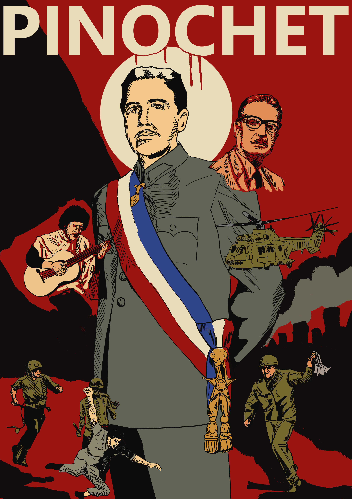

01
Ruptura institucional
Las Fuerzas Armadas y Carabineros derrocaron al presidente Salvador Allende. La Junta disolvió el Congreso, restringió partidos y censuró medios.
Un recorrido interactivo por el golpe de Estado, la represión política, las transformaciones económicas, la resistencia social y la transición democrática en Chile.
La memoria también es una fuente histórica. Explora las ilustraciones, recorre la línea del tiempo y pon a prueba lo aprendido.
Explorar la ilustración ↓
La dictadura cívico-militar comenzó con el golpe del 11 de septiembre de 1973 y terminó con el traspaso presidencial a Patricio Aylwin el 11 de marzo de 1990. Su legado combina profundas transformaciones económicas, represión sistemática y una memoria social todavía disputada.
Las Fuerzas Armadas y Carabineros derrocaron al presidente Salvador Allende. La Junta disolvió el Congreso, restringió partidos y censuró medios.
Hubo detenciones, tortura, ejecuciones, desapariciones forzadas y exilio. Organizaciones civiles y religiosas documentaron casos y apoyaron a perseguidos.
Se aplicaron políticas neoliberales: apertura comercial, privatizaciones, liberalización de precios y reducción del papel del Estado, con costos sociales desiguales.
La imagen funciona como un mapa de temas. Selecciona los marcadores para leer una síntesis histórica vinculada a cada elemento visual.
Seleccionamos hitos mencionados en el documento para ordenar procesos políticos, represivos, económicos y sociales.
La Unidad Popular impulsa nacionalizaciones y reformas sociales por la vía democrática; el país atraviesa una creciente polarización.
Las Fuerzas Armadas derrocan a Allende. Se instala una Junta Militar y Pinochet consolida su poder.
Pinochet asume la presidencia en 1974. La DINA persigue a opositores dentro y fuera de Chile; en 1977 es reemplazada por la CNI.
Se aplican medidas de estabilización, apertura comercial, privatización y liberalización de precios.
La ley de amnistía de 1978 cubre delitos cometidos desde el golpe. La Constitución de 1980 establece reglas que limitan la competencia democrática; en 1981 se crea el sistema de pensiones AFP.
Quiebran bancos y empresas, cae el PIB y el desempleo supera el 20%, según el documento base.
Las Jornadas de Protesta Nacional movilizan a sindicatos, estudiantes, pobladores y partidos. La represión continúa.
En el plebiscito sobre la continuidad de Pinochet, el “No” obtiene alrededor del 56% y el “Sí” cerca del 44%.
Patricio Aylwin, candidato de la Concertación, gana las elecciones presidenciales.
Aylwin asume la presidencia. La transición conserva restricciones institucionales heredadas de la dictadura.
Se publican informes oficiales sobre víctimas de ejecuciones, desaparición, prisión política y tortura. Pinochet muere en 2006 sin haber sido condenado.
Las gráficas sintetizan cifras citadas en el texto de base. No deben leerse como un recuento definitivo: los registros se revisaron con el tiempo y las categorías no siempre son equivalentes.
Resultado de la consulta sobre la continuidad de Pinochet.
Cifras aproximadas tal como aparecen en el documento proporcionado.
Dos informes con objetivos y universos de registro distintos.
Escala relativa al valor más alto mostrado. Las cifras no son directamente comparables: Rettig documentó muertes y Valech prisión política y tortura.
Del golpe de Estado al traspaso presidencial.
La duración aproximada es de 16 años y 6 meses, aunque el texto la describe como más de diecisiete años; para el cómputo exacto, las fechas indicadas suman cerca de 16 años y medio.
Una lectura cualitativa de los principales ejes, no una estadística.
Barras conceptuales para organizar la lectura; no representan mediciones cuantitativas.
Responde las preguntas. Al terminar verás tu puntuación y podrás consultar el historial de intentos guardado en este navegador.
Referencias transcritas o normalizadas a partir de la bibliografía incluida en el PDF proporcionado. Las afirmaciones del sitio se apoyan principalmente en ese documento de clase.